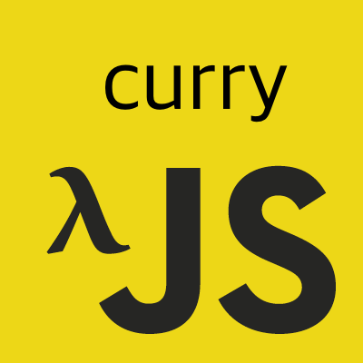

이 포스트는 인프런에서 진행한 유인동 님의 함수형 자바스크립트를 듣고 감명 받아서 쓴 글이다.
사실 underscore, lodash 등 함수형 패러타임으로 코드를 짤 수 있게 끔
미리 이런 함수들을 제공하는 라이브러리들을 쓰고, 이 포스트는 그닥 볼 필요가 없다.
하지만 이런 원리를 알고 접근을 하다보면 위 라이브러리를 쓴다고 하더라도 추가로 필요한 나의 코드를 함수형으로 더 짜기 유용하지 않을까?
curry
카레와 컬링과는 아무런 관련이 없다.
백문이 불여일견, 간단한 예제를 하나 보자.
기존에 n개의 인자를 받던 방식 대신 함수를 n번 호출하는 함수가 curry 함수, 그러한 기법을 currying이라 부른다.b => a+b 이 부분은 클로저이다.
클로저는 이미 생명 주기가 끝난 외부 함수의 변수를 참조하는 함수, 생성 당시의 스코프에 대한 연결을 갖는 블록이라고 정리하고 있다.
ES6는 블록 단위의 스코프라 b => a+b 에서 a는 모르지만 생명 주기가 끝난 외부 함수 a => b => a+b에서 a를 참조하고 있으므로 클로저이다.
이런 걸 어디다 써먹느냐고 생각할 수 있는데 나중에 go나 pipe, 또한 우리가 작성했던 함수와도 엮어서 사용이 가능하다.
위 _add와 _sub는 로직이 비슷해서 추상화가 가능하다.
|
|
뭔가 추상화가 잘 된 것 같다, 인자가 두 개인 경우만…
그럼 인자가 세 개인 경우에는 인자가 세 개인 커리 함수를 만들 것인가…?
n개의 인자에 대해 대비할 수 있는 커리 함수를 다시 만들어보자.아래 링크를 보고 완전히 베낀 수준이며 ES6로 작성했을 뿐이다.
아래 링크를 참고하면 좀 더 자세하고 ES5로 작성된 예제를 볼 수 있다.
JavaScript에서 커링 currying 함수 작성하기
클로저는 함수가 아무리 호출되어도 다시 초기화 하지 않고, 유지되어야하는 값을 위해 쓴다고 나는 알고 있다.(혹시 틀렸다면 태클을…)
기존 함수를 커리 함수로 호출할 때 유지해야할 값이 두 가지가 있다.
- 내가 호출하려는 원래 함수가 몇 개의 인자를 요구하는가
- 내가 지금까지 몇 개의 인자를 넘겼는가
이 두 가지 값은 함수를 아무리 호출해도 유지를 하고 있어야한다.
그럼 커리 함수를 본격적으로 작성해보자.
- 내가 호출하려는 원래 함수가 몇 개의 인자를 요구하는가 12345const _curry = fn => {// fnArgLen은 함수를 호출할 때 마다 유지돼야하고, 값이 변하지 않는다.const fnArgLen = fn.length; // 인자로 받은 함수(fn)에서 요구하는 인자의 갯수.return () => console.log(fnArgLen); // 외부 스코프의 변수인 fnArgLen을 사용하고 있다.};
간단하게 테스트를 위해 함수의 인자를 유지하고 있는지 테스트하기 위한 함수를 만들어보았다.
아래와 같이 테스트 해보자.
_curry 함수는 함수를 반환하는 고차함수다.
따라서 ()()와 같이 함수를 호출해서 반환한 값을 또 호출할 수 있는 것이다.
그 결과 우리가 두 번째 함수에는 딱히 인자를 넘기지 않았음에도 불구하고 그 값을 기억하고 있는
클로저를 만들어냈다. (클로저가 뭐 그렇게 별 게 아니다.)
- 내가 지금까지 몇 개의 인자를 넘겼는가
이 값은 함수를 호출할 때마다 값이 변해야한다.
그렇다고 해서 처음부터 초기화를 하는 게 아니라 기존의 값을 기억하고 그 뒤에 현재 넘긴 인자를 추가하면 된다.
값이 계속해서 동일하지 않더라도 값을 기억하고 있어야하기 때문에 클로저를 써야한다.
위 함수에서 좀 더 작성해보자.1234567891011121314151617181920212223242526const _curry = fn => {// fnArgLen은 함수를 호출할 때 마다 유지돼야하고, 값이 변하지 않는다.const fnArgLen = fn.length; // 인자로 받은 함수(fn)에서 요구하는 인자의 갯수.console.log(fnArgLen);return (...args) => { // 함수의 인자의 갯수를 기억하는 클로저// 인자를 넘겼을 때 그 인자들의 목록은 매번 함수를 호출할 때마다 기억해야함.let memo = [...args]; // 처음 인자를 넘기고 호출했을 때 그 인자를 담을 배열.console.log(fnArgLen, memo);return function res(...args) { // 여태까지 넘긴 인자들을 기억하는 클로저, 재호출을 위해 이름을 붙여줌.memo = [...memo, ...args];console.log(fnArgLen, memo);return res;}}};const abcdef = (a, b, c, d, e, f) => {};let a = _curry(abcdef); // 6let b = a(1); // 6, [1]let c = b(2); // 6, [1, 2]let d = c(3); // 6, [1, 2, 3]let e = d(4); // 6, [1, 2, 3, 4]let f = e(5); // 6, [1, 2, 3, 4, 5]let g = f(6); // 6, [1, 2, 3, 4, 5, 6]let h = g(7); // 6, [1, 2, 3, 4, 5, 6, 7]h(8); // 6, [1, 2, 3, 4, 5, 6, 7, 8]
함수를 계속 호출해도 원래 함수 인자의 갯수와 내가 여태까지 넘겼던 인자를 계속해서 들고있다.
여기서 한가지 문제점이 존재한다.
내가 원래 넘기려는 인자와 갯수가 일치하면 해당 함수를 실행해야하는데 여전히 계속해서 res 함수를 반환한다는 단점이 존재한다.
적절히 조건문을 섞어주면 될 것 같다.
|
|
Function.prototype.apply은 첫 번째 인자로 this로 바인딩할 값, 두 번째 인자로 매개변수들을 배열로 받는다.
여태까지 입력받은 인자를 (1, 2, 3, 4)의 형태로 넘기는 게 가능한지는 모르겠으나(Function.prototype.call이 이런 식으로 동작)
그것보다 매개변수를 배열로 ([1, 2, 3, 4])와 같이 넘기는 게 훨씬 편하다.
우리가 원하는 형태로 n개의 매개변수를 넘기면 n번 호출해야 함수가 비로소 실행(지연해서 실행이라고 해야하려나)되는 커리 함수를 만들었다.
curryr
하지만 이것도 쓰다보면 어딘가 모르게 어색한 부분이 존재한다.
|
|
add를 할 때는 3에 10을 더해서 13이 나오는 듯한 느낌인데
sub를 할 때는 3에 10을 빼서 -7이 나와야할 것 같은데 반대로 10에 3을 빼서 7이 나왔다.
덧셈이야 순서가 상관이 없다지만 뺄셈의 경우에는 이야기가 달라진다.
따라서 아래와 같이 하면 문제가 해결된다.
음… 함수를 커리에게 넘겨줄 때 반대로 쓰면 되는 문제인데…
어쨌든 curryr(curry reverse)이라는 녀석이 존재한다.
어떤 이유에서 생기긴 했을 거다. 그냥 보자.
짱구를 굴려봤지만 _curry를 이용해서 추상화 할 수가 없었다 ㅠㅠ…
아마 이 curryr의 진가는 pipe와 go를 익히면 알게 될 것이다.